|
| |||||||||||||
|
|
||
Putting the issue of local minima aside for a moment, another major challenge for implementing potential functions is constructing the configuration space in the first place. This is especially challenging when the configuration space is non-Euclidean and multidimensional. In order to deal with this difficulty, we will define a potential function in the workspace, which is Euclidean, and then lift it to the configuration space. Here, we compute a gradient in the configuration space as a function of gradients in the workspace. To do so, instead of thinking of gradients as velocity vectors, we will now think of them as forces. We then establish a relationship between a workspace force and a configuration space force. Then we apply this relationship to a single rigid-body robot, i.e., we show how to derive a configuration space force using workspace forces acting a rigid-body robot. Finally, we apply this relationship to a multibody robot. We focus the discussion in this section on the attractive/repulsive potentials from section 4.1.
Since the workspace is a subset of a low-dimensional space (either 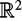 or 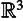), it is much easier to implement and evaluate potential functions over the workspace than over the configuration space. Now, we will treat the gradient in the workspace as forces. Naturally, workspace potential functions give rise to workspace forces, but ultimately, we will need forces in the configuration space to determine the path for the robot.
Let x and q be coordinate vectors representing a point in the workspace and the configuration of the robot, respectively, where the coordinates x and q are related by the forward kinematics (chapter 3) x = φ(q). Let f and u denote generalized forces in the workspace and the configuration space, respectively. To represent a force f acting at a point x = φ(q)in the workspace as a generalized force u acting in the robot's configuration space, we use the principle of virtual work, which essentially says that work (or power) is a coordinate-independent quantity. This means that power measured in workspace coordinates must be equal to power measured in configuration space coordinates. In the workspace, the power done by a force f is the familiar 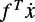. In the configuration space, power is given by 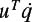. From chapter 3, section 3.8, we know that 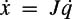, where J = ∂φ/∂q is the Jacobian of the forward kinematic map. Therefore, the mapping from workspace forces to configuration space forces is given by
Consider the polygonal robot shown in figure 4.19. The vertex a has coordinates [ax, ay]T in the robot's local coordinate frame. Therefore, if the robot's coordinate frame is located at [x, y]T with orientation θ, the forward kinematic map for vertex a (i.e., the mapping from q = [x, y, θ]T to the global coordinates of the vertex a) is given by
| (4.20) | 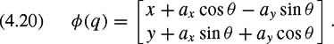
|
The corresponding Jacobian matrix is given by
| (4.21) | 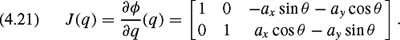
|
Therefore, the configuration space force is given by
| (4.22) | 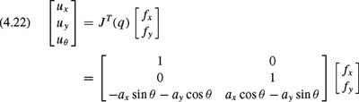
|
| (4.23) | 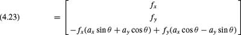
|
and uθ corresponds to the torque exerted about the origin of the robot frame. Our result for uθ can be verified by the familiar torque equation τ = r × f, where r is the vector from the robot's origin to the point of application of f, and τ = uθ.
As before, our goal in defining potential functions is to construct a potential function that repels the robot from obstacles, with a global minimum that corresponds to qgoal. In the configuration space, this task was conceptually simple because the robot was represented by a single point, which we treated as a point mass under the influence of a potential field. In the workspace, things are not so simple; the robot has finite area in the plane and volume in three dimensions. Evaluating the effect of a potential field on the robot would involve computing an integral over the area/volume defined by the robot, and this can be quite complex (both mathematically and computationally). An alternative approach is to select a subset of points on the robot, called control points, and to define a workspace potential for each of these points. Evaluating the effect of the potential field on a single point is no different from the evaluations required in section 4.1. We then use the relationship established in the previous subsection to convert the individual workspace forces to configuration space forces. We then add them to get the total configuration space force. As a result, we have approximately "lifted" the total workspace forces on the robot to a generalized force in the configuration space.
We need to pick control points {ri } on the robot. The minimum number of control points depends upon the number of degrees of freedom of the robot. It is the number of points required to "pin down" the robot. For example, for a rigid-body robot in the plane, we can fix the position of the robot by fixing the position of two of its points. For each rj, the attractive potential is
With this potential function, the workspace force for attractive control point ri is defined by
For the workspace repulsive potential fields, we use the same control points {rj}, and define the repulsive potential for rj as
| (4.24) | 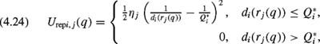
|
where di (rj(q)) is the shortest distance between the control point rj and obstacle 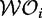, and Q*i is the workspace distance of influence for obstacles. The gradient of each Urepi, j corresponds to a workspace force,
Often the vertices of the robot are used as the repulsive control points, but it is important to note that this selection of repulsive control points does not guarantee that the robot cannot collide with an obstacle. Figure 4.20 shows an example where this is the case. In this figure, the repulsive control points r1 and r2 are very far from the obstacle 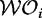, and therefore the repulsive influence may not be great enough to prevent the robot edge E1 from colliding with the obstacle. For this reason, we could add a floating repulsive control point, rfloat. The floating control point is defined as that point on the boundary of the robot that is closest to any workspace obstacle. Obviously the choice of rfloat depends on the configuration q.For the example shown in figure 4.20, rfloat would be located at the center of edge E1, thus repelling the robot from the obstacle. The repulsive force acting on rfloat is defined in the same way as for the other control points, using (4.25).
The total configuration space force acting on the robot is the sum of the configuration space forces that result from all attractive and repulsive control points, i.e.,
| (4.26) | 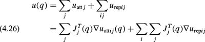
|
in which Jj (q)is the Jacobian matrix for control point rj. It is essential that the addition of forces be done in the configuration space and not in the workspace.
Having defined a configuration space force, which we will again treat as a velocity, we can use the same gradient descent method for this case as in section 4.1. As before, there are a number of design choices that must be made.
ζj controls the relative influence of the attractive potential for control point rj. It is not necessary that all of the ζi be set to the same value. We might choose to weight one of the control points more heavily than the others, producing a "follow the leader" type of motion, in which the leader control point is quickly attracted to its final position, and the robot then reorients itself so that the other attractive control points reach their final positions.
ηj controls the relative influence of the repulsive potential for control point rj. As with the ζi it is not necessary that all of the ηj be set to the same value.
Q*i We can define a distinct Q*i for each obstacle. In particular, we do not want any obstacle's region of influence to include the goal position of any repulsive control point. We may also wish to assign distinct Q*i 's to the obstacles to avoid the possibility of overlapping regions of influence for distinct obstacles.
It is straightforward to extend the methods of the previous subsection to the case of articulated manipulators. Attractive control points are defined on the end effector and repulsive control points are placed on the links. It may be a good idea to use at least one floating control point for each link of the robot, since each link is a rigid body and we would like to prevent the links from colliding with obstacles. For each control point, a Jacobian matrix is computed (see chapter 3, section 3.8). These Jacobians map workspace forces to generalized configuration space forces (joint torques for revolute joints, joint forces for prismatic joints). With these exceptions, the formalism of section 4.7.2 can be directly applied to the path-planning problem for articulated arms (of course the implementation may be a bit more difficult, since the Jacobians may be a bit more difficult to construct, and computing distances to polyhedrons in three dimensions is a bit more involved than computing distances to polygons in the plane). Naturally, this method will be plagued with local minima.
|
|
||
|